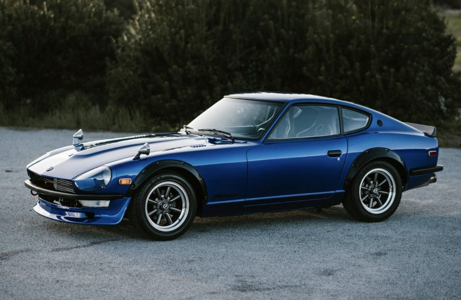

This Japanese classic was introduced stateside in 1969 to huge success. It came with a 151-hp inline-six that did 0-60 in 8.0 seconds; it adds up to a car that is both reliable and fun to drive. It’s not winning any awards at the drag strip (not out of the box, at least) but it is widely regarded as a great cruising car with plenty of fun waiting at the next twisty road. If you’re thinking about picking one up for a restoration project, know that these cars like to rust from the inside out. If the vehicle appears to be in pretty decent condition already, make sure to be attentive and thorough in your rust checklist. Once it’s up and running, though, expect it to behave like a much more mechanically engineered Scion FR-S. The 240Z will be lighter and have less power, but it should balance out pretty well.
